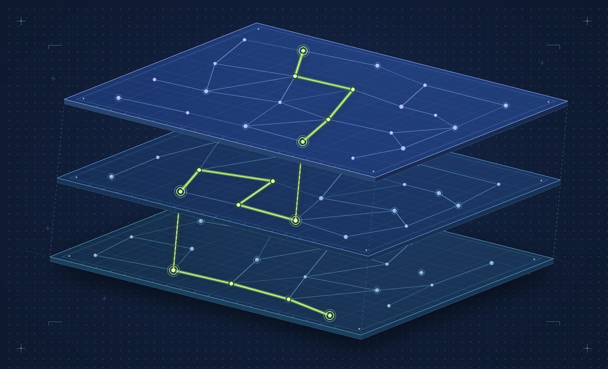
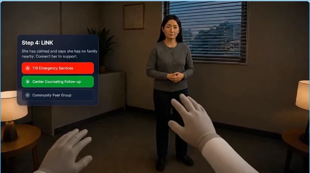
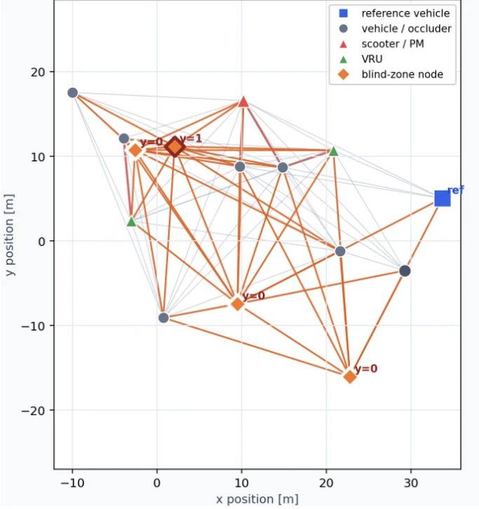
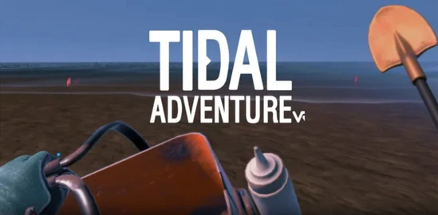
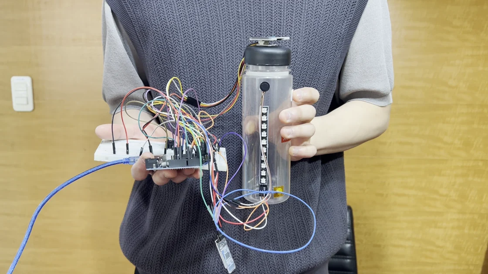
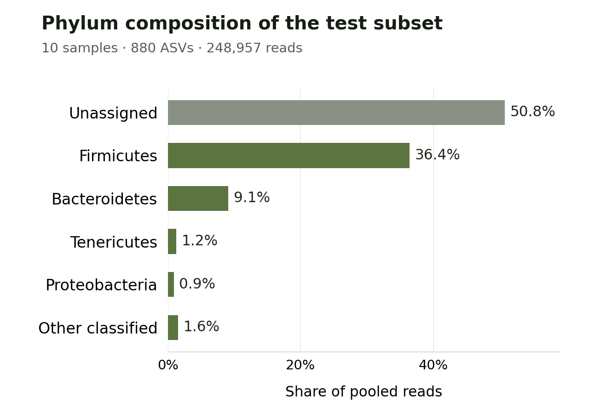

Research
Research interests
사람의 행동을 이해하는 인터페이스와, 데이터 사이의 관계를 설명하는 모델을 연구합니다.
Portfolio
Selected projects
2023 — 2026

SBOM 취약점 전파 가시화
취약점 번호 하나로 어떤 소프트웨어 자산을 점검해야 하는지 찾고, 그 자산에 포함된 패키지까지 화면에서 따라갈 수 있습니다.

conVRsation
현장 인터뷰를 VR 훈련 설계로 연결하고 공공기관 구매·라이선스 모델을 팀과 검토했습니다. 실리콘밸리에서 제품을 영어로 시연했습니다.

BlindSpotter
IMPTC 교차로 궤적을 프레임별 그래프로 바꾸고, 사각지대 부근에 전동킥보드가 나타날지를 세 가지 모델로 예측했습니다.

Tidal Adventure
갯벌 탐험 VR에서 생물 선택 피드백과 손목 나침반을 개선하고 실제 기기에서 확인했습니다.

MED-MAX 약꾹
복약 커뮤니티에서 사용자의 이동과 상태를 동기화하고, 로그인부터 공동 공간 입장까지 연결했습니다.

Smart Bottle · 스마트 보틀
물병에서 보낸 센서값을 Android 앱에서 받도록 BLE 연결을 구현했습니다. 실제 기기와 수신 코드로 구현 과정을 볼 수 있습니다.

장내 미생물과 파킨슨병
장–뇌 축에 대한 관심에서 출발해 알파시누클레인병증을 탐구했습니다. 공개 서열의 품질을 점검하고 시험 시료 10개에서 880개 미생물 서열 특징을 구성했습니다.
더 많은 프로젝트
수업 프로젝트
전체 보기시스템 프로그래밍과 테스트
알고리즘과 모델링
영상 처리와 전자회로
Background
Experience
- 2026.05 — 08
- KAIST WIT Lab학부연구생 · 혼합현실 입력 방식 구현 및 사용자 실험
- 2026.03 — 07
- KAIST 글로벌 창업 서머스쿨conVRsation 팀 리더 · 실리콘밸리 데모 피칭 · Best Epilogue 선정작 읽기 ↗
- 2024.12 — 2025.02
- OverayXR 개발 인턴 · Unity 상호작용과 다중접속 아바타 개발